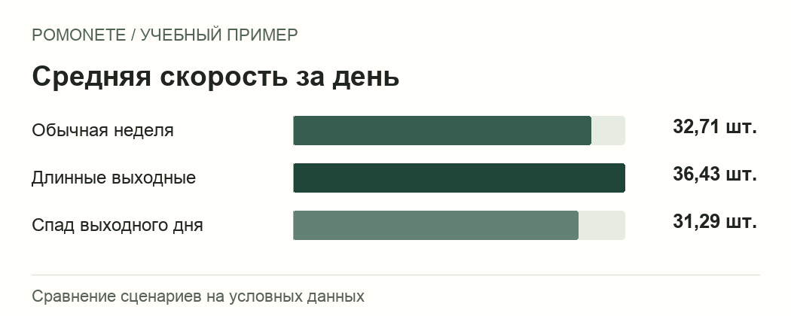

Будни и выходные в прогнозе Яндекс Маркета
Как селлер рассчитывает среднюю дневную скорость продаж с разным числом будней и выходных.
У магазина сменных ремешков выходные дают иной темп, чем будни. Когда начались длинные выходные, селлеру Яндекс Маркета пришлось менять объём отгрузки. Соберём среднюю дневную скорость, которая отражает календарь, и дополним её итогом на период.
Почему число дней важно
Проверьте доступность каждого дня и последние аналогичные выходные. Длинный праздник может вести себя иначе, чем два обычных выходных. Если есть отдельный ряд, подберите его на уровне сопоставимого ассортимента и доступной доставки.
Чтобы пересобрать расчёт «Средняя скорость за день» для своего магазина, перенесите в него исходные числа. В формуле A обозначает «заказы в будни за день», B обозначает «число будней», C обозначает «заказы в выходные за день», D обозначает «число выходных». Обе ставки взвешивают по их собственным объёмам. Среднее из двух ставок годится только при равных весах. Запишите рядом период и охват каждого среза. Для оценочных строк оставьте пояснения рядом с исходными значениями. При чтении сводки будет видно, какие из них пока подтверждены.
Средняя скорость за день = (A × B + C × D) ÷ (B + D)
| Условие | Заказы в будни за день | Число будней | Заказы в выходные за день | Число выходных | Средняя скорость за день |
|---|---|---|---|---|---|
| Обычная неделя | 29 | 5 | 42 | 2 | 32,71 шт. |
| Длинные выходные | 29 | 3 | 42 | 4 | 36,43 шт. |
| Спад выходного дня | 29 | 3 | 33 | 4 | 31,29 шт. |

В сценарии «Обычная неделя» в формулу подставляем заказы в будни за день = 29, число будней = 5, заказы в выходные за день = 42, число выходных = 2. Получается 32,71 шт.. В модели пять обычных дней и два дня с более высоким спросом.
В сценарии «Длинные выходные» в формулу подставляем заказы в будни за день = 29, число будней = 3, заказы в выходные за день = 42, число выходных = 4. Получается 36,43 шт.. При тех же скоростях высокий спрос приходится на большее число дней.
В сценарии «Спад выходного дня» в формулу подставляем заказы в будни за день = 29, число будней = 3, заказы в выходные за день = 33, число выходных = 4. Получается 31,29 шт.. Для верхнего сценария спроса теперь используется более осторожный ориентир.
Если «Обычная неделя» взять за исходную точку, «Длинные выходные» меняет показатель «средняя скорость за день» на 3,71 шт., а «Спад выходного дня» на -1,43 шт.. Между двумя последними строками разница составляет -5,14 шт. при вычитании второй из третьей. Смотрите, какой именно вход изменился между строками. Если менялись объём и условия одновременно, итог сравнения относится ко всему сочетанию.
Запишите отдельно результат по обычным условиям «Обычная неделя» (32,71 шт.) и результат по уточнённым условиям «Спад выходного дня» (31,29 шт.). Если обе оценки получились по одному правилу, следующий вопрос касается исходных данных. Проверьте, сохраняется ли направление сравнения, если вернуть одно нестабильное условие к исходному. Сценарии полезно привязывать к операционному событию, по которому можно проверить, что новый режим действительно произошёл.
Как избежать неточного среднего
Среднее двух скоростей без весов работает при одинаковом числе дней в каждой группе. Сохраните исходные объёмы. Если нужна полная сумма, сложите дневные скорости, умноженные на количество дней их типа, и учтите аналогичный период обработки заказа.
Проверьте переход от первичной записи до показателя «средняя скорость за день». Колонки «заказы в будни за день, число будней, заказы в выходные за день, число выходных» могут поступить разными путями. Пройдите пример, где дата и сумма видны в исходнике, до последней строки. Для этого подойдут история продаж, журнал остатков и даты фактических приходов. Затем возьмите один случай с исключением и убедитесь, что результат можно восстановить по сохранённому правилу.
В историю поставок запишите обещанную и фактическую дату, момент доступности товара и интервал, в котором возник недозаказ. Разовые всплески спроса и дни без товара полезно отмечать отдельно. Когда данных мало, прогноз на ближайший горизонт лучше держать несколькими уровнями и привязывать каждый к своему действию. При высокой неопределённости небольшая партия с возможностью докупки даёт другую экономику, чем дешёвая крупная партия с долгим ожиданием.
Что сильнее всего меняет результат
Продолжим на базе «Длинные выходные» (36,43 шт.). Разложим расчёт по входам «заказы в будни за день», «число будней», «заказы в выходные за день», «число выходных». Для удобства каждый опыт меняет одну величину примерно на десятую часть. Во всех остальных полях оставляем исходные числа. Для проверки более длинного периода шаги можно подобрать по фактическим колебаниям из истории.
- «Заказы в будни за день» меняется с 29 на 32. При прежних остальных входах получается 37,71 шт., сдвиг составляет 1,29 шт..
- «Число будней» меняется с 3 на 4. При прежних остальных входах получается 35,5 шт., сдвиг составляет -0,93 шт..
- «Заказы в выходные за день» меняется с 42 на 46. При прежних остальных входах получается 38,71 шт., сдвиг составляет 2,29 шт..
- «Число выходных» меняется с 4 на 5. При прежних остальных входах получается 37,12 шт., сдвиг составляет 0,7 шт..
Отметьте в рабочей таблице, что «заказы в выходные за день» показал сдвиг 2,29 шт.. Оцените, достаточно ли этой величины, чтобы оправдать смену выбранного режима. Если решение остаётся тем же, ограничьтесь контролем на очередной дате. При перевороте вывода запросите уточнение исходного значения и повторите опыт.
При очень малом спросе оцените число сравнимых недель. Один крупный заказ может испортить среднее выходного дня. Сохраняйте результат с крупным заказом и без него, чтобы знать, на сколько единиц выбора меняется план.
Как запланировать склад
Разложите объём по дням, чтобы не перегрузить смену. Проверьте остатки ходовой группы и срок заказа поставщику. В конце периода сравните отдельно выходные и будни. Если прогноз ошибся только в одном типе дней, пересмотрите лишь его скорость.
На очередном пересмотре отметьте, какие сроки реализовались и какой был спрос в дни с доступным запасом. Оценку качества считают на событии, которое наступило после составления прогноза. Так проще отделить неточность метода от изменившейся доступности поставщика. Сохраняйте предположения на момент закупки, чтобы после перемен на рынке можно было объяснить размер партии по датам и объёмам.
При еженедельной сверке поставьте рядом сценарий «Спад выходного дня» и реально наблюдавшееся значение. Если оценка стала систематически расходиться с результатом, назовите источник и предложите измерение меньшего масштаба. Для селлера Яндекс Маркета такой шаг важен, когда тот же показатель собирают разные сотрудники или несколько складов.